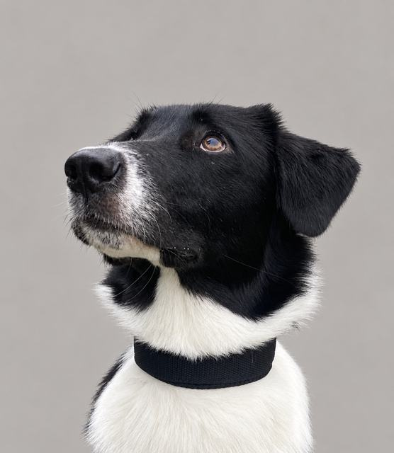

Амуниция для собак, сшитая под вашу собаку
Ошейники и шлейки ручной работы из Мурино. Шью по меркам, цвет и ширину выбираете вы. Названа в честь Луны, первого тестировщика всех моих изделий.

Что я шью
Все изделия на сварных металлических полукольцах и фастексе из полиацеталя.
Как заказать
- Выберите изделиеВ каталоге выберите ширину и вариант, цена пересчитается сразу.
- Снимите меркиДля ошейника нужен обхват шеи, для шлейки ещё обхват груди и длина спины. Как измерить.
- Напишите мнеПодберу размер, пришлю фото готового изделия. Есть самовывоз в Мурино.
О мастерской
Меня зовут Алина. Я шью амуницию вручную, небольшими партиями и под заказ, каждое изделие проверяю лично. Бренд назван в честь моей собаки Луны, а контролёр качества у нас кот Марс.